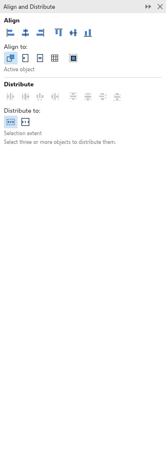

Alinhar e distribuir objetos
Alinhar coloca objetos em fila pelas bordas ou pelos centros; distribuir os espaça por igual. Use o painel Alinhar e distribuir (Ctrl+Shift+A), os comandos de Objeto > Alinhar e distribuir ou as teclas abaixo.

Alinhar
- Selecione os objetos. Selecione por último aquele com o qual os outros devem se alinhar.
- Na parte Alinhar do painel, escolha Alinhar a:
- Objeto ativo (de início): o objeto selecionado por último; com um só objeto selecionado, a página;
- Borda da página: as bordas da página;
- Centro da página: o centro da página;
- Grade: cada objeto na linha mais próxima da grade do documento.
- Clique em um dos seis botões: bordas esquerdas, centros em uma linha vertical, bordas direitas, bordas superiores, centros em uma linha horizontal ou bordas inferiores.
Usar contorno: alinhar as bordas externas dos contornos: com isso ativado, as bordas externas dos contornos se encontram, em vez dos próprios caminhos.
As teclas sempre alinham pelo objeto selecionado por último:
| Tecla | Comando |
|---|---|
| L | Alinhar à esquerda |
| R | Alinhar à direita |
| T | Alinhar ao topo |
| B | Alinhar à base |
| E | Alinhar centros horizontalmente |
| C | Alinhar centros verticalmente |
| P | Centralizar na página |
Distribuir
- Selecione três ou mais objetos (dois ou mais para distribuir pela página).
- Na parte Distribuir, escolha Distribuir em:
- Extensão da seleção (de início): o primeiro e o último objeto ficam onde estão, e os outros se movem entre eles;
- Extensão da página: os objetos se espalham pela página inteira, o primeiro tocando um lado e o último o outro.
- Clique em um dos oito botões: bordas esquerdas, centros, espaços ou bordas direitas na horizontal, ou bordas superiores, centros, espaços ou bordas inferiores na vertical. Distribuir os espaços dá a mesma distância entre os objetos, sejam quais forem os tamanhos.
Com poucos objetos, os botões ficam claros e o painel diz quantos são necessários. Cada alinhamento ou distribuição é um passo de desfazer.
Para colocar cópias a distâncias iguais de uma vez, veja Duplicar e repetir.
Encaixar objetos num caminho
O painel Ajustar objetos ao caminho coloca objetos ao longo de uma linha, de uma curva ou do contorno de uma forma. Abra-o com Objeto > Ajustar objetos ao caminho.
- Selecione os objetos a colocar e, por último, o caminho (Shift+clique).
- Em Espaçamento, escolha Uniforme ao longo do caminho para espalhar os objetos pelo caminho, ou Distância fixa e digite a Distância de um objeto ao seguinte. Measure between mede essa distância entre os Centers dos objetos vizinhos ou entre as Edges, para que objetos de tamanhos diferentes fiquem com o mesmo vão.
- Deslocamento inicial afasta o primeiro objeto do início do caminho; End offset mantém os objetos longe do fim de um caminho aberto. Com distância fixa, Place the row at põe a fileira no Start, no Middle ou no End.
- Em Copies, Number of objects enche o caminho com esse número de objetos: os que você selecionou e depois cópias deles, um de cada vez. Com distância fixa, Fill the path faz quantas cópias couberem.
- Em Placement, coloque os objetos On the path, Above the path ou Below the path, com uma Distance from the path.
- Em Rotation, escolha Girar objetos para seguir o caminho para girar cada objeto com a direção do caminho, ou Fixed angle para girar todos igualmente; o Angle é somado nos dois casos.
- Order define qual objeto vem primeiro: como selecionados, invertida, da esquerda para a direita ou da direita para a esquerda, por tamanho, ou grande e pequeno alternados. Inverter direção começa pela outra ponta do caminho.
- Assim que você muda um valor, os contornos na tela mostram onde os objetos e as cópias vão ficar. Clique em Aplicar. As cópias vão para a camada do objeto que copiam, e os objetos colocados ficam selecionados.
Outras opções do painel:
- Keep originals deixa os objetos selecionados onde estão e posiciona cópias; Group all objects põe o que foi posicionado em um só grupo.
- Treat subpaths as contiguous percorre todas as partes de um caminho feito de várias peças, uma após a outra; desligado, só a primeira peça é usada.
- Reference escolhe o ponto de cada objeto que vai sobre o caminho: seu Center of rotation (movido com a ferramenta Seleção, se você o moveu), ou um ponto da sua Bounding box ou Bounding box with outline, escolhido na grade Origin. O ponto do meio embaixo deixa os objetos em pé sobre o caminho.
- Ignore initial rotation endireita objetos que estavam girados antes de posicioná-los.
- Em Modify rotation, um Style soma um giro a cada objeto: Uniform gira todos pelo Start angle, Progressive gira cada um um pouco mais que o anterior (o Spin angle vezes as Revolutions ao longo da fileira inteira), Jitter gira cada um de um valor diferente até a Range (±), e Progressive jitter faz os dois. Marque Clockwise para girar no outro sentido. Só os campos que o estilo usa podem ser mudados.
O painel começa com os valores padrão, sem contornos, sempre que você seleciona outros objetos (ou trabalha em outro desenho); os valores que você digita ficam enquanto os mesmos objetos estão selecionados. Numa forma fechada, os objetos dão a volta inteira sem que o primeiro e o último se encontrem. Encaixar é um passo de desfazer.